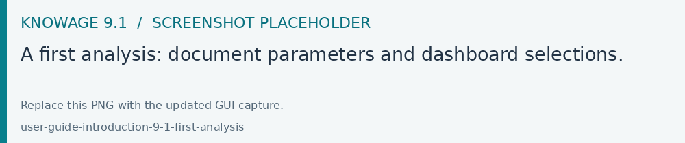

Getting started
Your first analysis
Open the Knowage address supplied by your organization and sign in.
Select your working role if prompted. The active roles determine which documents, data and commands you can use.
Open Documents Browser, or choose a document from a configured menu.
Search for the document and open it.
If a parameter panel appears, fill in the required values and choose Execute.
Explore the result using the filters and interactions provided by its author.
For example, open a sales dashboard, choose a year and a region, then select a product category in a chart. Related widgets update according to the dataset associations configured by the author.

Fig. 1 A first analysis: document parameters and dashboard selections.
Documents, datasets and permissions
An analytical document is a saved analysis, such as a Dashboard, Cockpit, report, QBE query or KPI document. A dataset supplies the data used by an analysis. A data source connects Knowage to the underlying system.
Document parameters are selected before execution. Dashboard selections filter the data while you explore it. Changing a selection and changing a document parameter can therefore affect the result in different ways.
Use Finding your way around to find your tools and Running and exploring documents to learn about saved views and exports. Authors can continue with Create a Dashboard.